Morocco
Overview
We traveled from May 12 thru May 23, 2023.
We booked a private tour with Morocco Daily Tours for about $3K total, for 2 people (so $1.5K each). This means you get a private driver that takes you around different places and you don't really have to plan anything. No crowding in buses adhering to some group schedule. Stop whenever you want, wherever you want. Just tell to driver to go and they'll drive you there.
It's our first time doing this kind of a VIP trip because if you did this anywhere else, it'd be prohibitively expensive. But with $3K, it included:
- A private car
- VIP service
- Lodging
- Breakfast at all hotels
- 3 or 4 dinners
I highly recommend them. Our journey was like this:
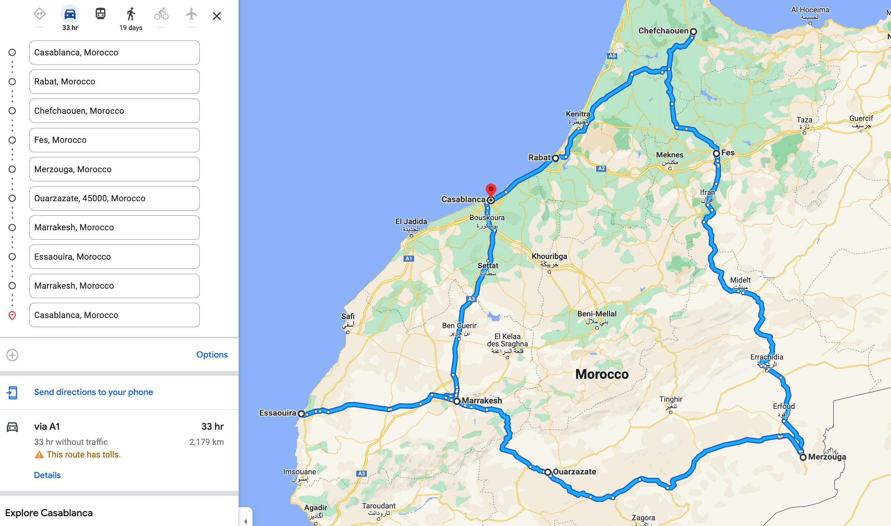
Casablanca (May 13)
Redeye flight. I didn't sleep. It was one of those rundown airports where you get off the plane onto the tarmac, and then you take a bus to your terminal.
My customs was slightly delayed because I didn't know that we had to know where we were staying. I just told the customs officer I don't know where I was staying as the tour guide booked it.
Terminals are switched. Maps say you will land in Terminal 1 but you'll land in Terminal 2. When we departed at the end of our journey, Google said we will depart at T1 but instead needed to walk to T2. No biggie though as they're in the same complex. Minor inconvenience is having to coordinate with the driver and have them switch terminals.
It was hot and our luggage took an hour after customs to arrive. Run-down, slow service was to be expected, so I wasn't mad.
Greeted by our driver, he was dressed in a suit so the vibe completely changed from there on from run-down, poor-service to VIP, excellent service.
We went to a Mosque and it was cool.
After, we headed directly for Rabat since we were told that other than the Mosque, there's not much to do in Casablanca.
Lessons
- Mental framing is important. If I had expected an airport in a 3rd-world country to be as modern and as quick as a 1st-world one, my expectations would be set too high and I'd be very disappointed.
- Know the address (or at least the place you're staying) the first night when you travel internationally.
- Allot for ample time when going to a new country. Businesses are inefficient in the world; airports are no different. If you don't know how much time something will take, you should allot for more time. For example, if you had to book and catch a bus after landing to Morocco, you'd probably book a ticket 2-3 hours after your landing time to account for delays, being at the wrong terminal, etc. Luckily, we had a private driver so he just waited for us.
Rabat (May 13-14)
We arrived to our hotel after a few hours in the car (comfy, it was an 8-seater Mercedes). We checked into a Riad (traditional hotels, more explanation later).
Grabbed dinner at a restaurant located at the 2nd (top) floor. The 'roof' was made out of beautiful rugs and they made Tajine for us. Tasty, moist meat.
We would have it a lot on this trip, but just know that food here at the time of writing costs about 50-150DH (about $5-$15 USD) per thing of Tagine.
We then explored and walked around the dense market in Rabat, where a lot of locals were. Then some old ass, witch-looking motherfucker came up and pinched Serena in the arm. The old witch was smiling / happy when she did that so not sure if she was putting a curse on Serena or if she just hasn't seen an Asian before.
Probably the latter.
Mildly upset and humored simultaneously, we went back to the Riad.
Woke up the next day, ate breakfast, checked out an 11th century Mosque / ruin nearby, and set off to Chefchouen.
Chefchoeun (May 14-15)
Jews used to live here and painted the town blue as a sign of respect to God, or peace, or something (different sources cite different reasons for why they painted it blue). Regardless, the town reminds me of this song and also makes for an Instagram destination.
If you're not sure what Instagram is, it's an ancient app that geriatrics use to share photos and show off their lives and grandkids.
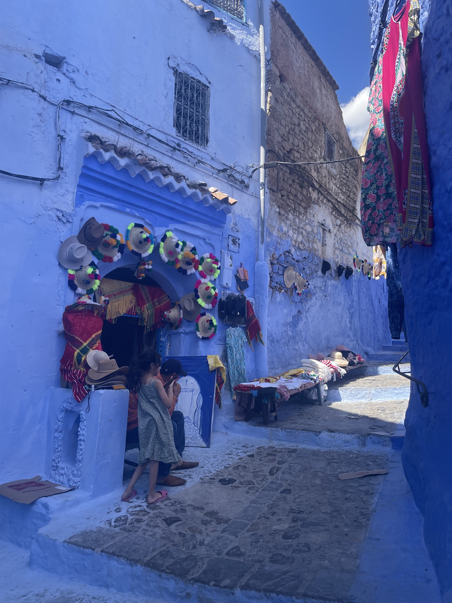
We hiked up a mountain near the town Mosque to see the sunset and went back to our hotel. The next day's itinerary was just "going to Fes" and we weren't going to do anything there, so we spent the morning taking more photos of the blue town.
Fes (May 15-17)
Riads, typical breakfast
We arrived to Fes and took a bunch of pictures of the Riad because it was pretty. Here's an exterior and interior shot with some explanations.
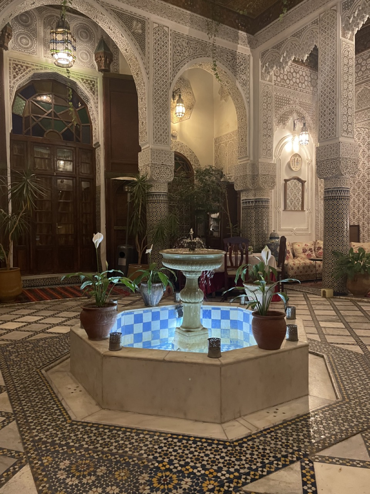
Most Riads have a deep tie with Islam and its architecture have the following properties:
- No animal or human idols. Thus, mosaics are in various geometrics shapes.
- Balconies always look inward into the courtyard, as opposed to out in the street. This is because modesty is considered a virtue in Islam, and so all the showy things are hidden inside walls.
- Riad courtyards are generally square and symmetric in nature, with a fountain in the middle.
- The reception courtyard is generally an imagination of what the afterlife looks like.
- The fountain in the center represents the fountain of life.
- And the 4 quadrants in the square courtyard represents the rivers of water, milk, wine, and honey.
- Riad courtyards vary in extravagance. Later on in the trip, we see some Riads that don't host guests but instead serve as a museum and follow the same architecture and very similar designs, but is much more extravagant in size / plants / gardens.
The interior looks like the below and had a very high ceiling.
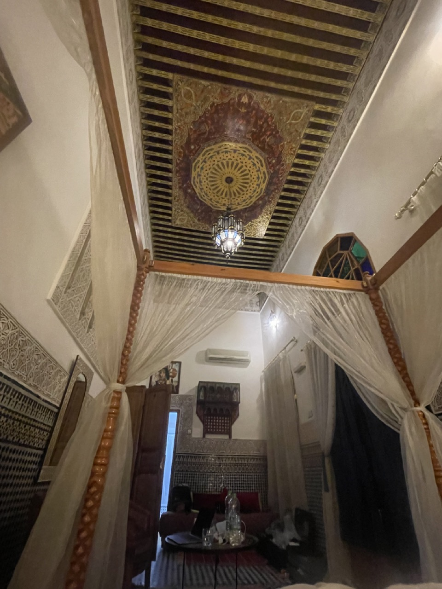
The designs are beautiful but it's a bit run down and a little dirty. When you step on the floor with your bare feet there are like chunks of dirt or mosaic for example. The AC was also broken. But the staff was friendly and tried to do their best to help, so it may these mild inconveniences very bearable. We watched Succession and woke up the next day to a traditional Moroccan breakfast:
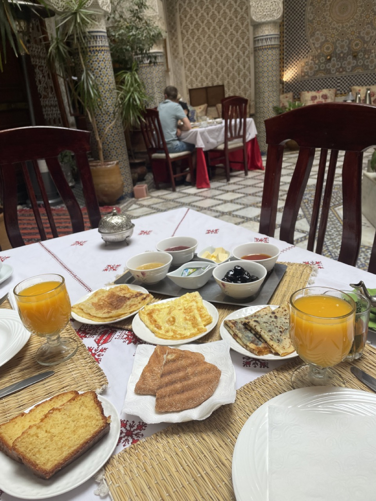
While variety isn't a big forte of Morocco (think Tagine every meal), meals varied in quality based on how they make it. For example, some had room-temp pastries, and some had warm / hotter pastries, etc. Tagines varied based on the cut of meat--some were very dry with very little sauce to dip with bread, whereas some were perfectly moist with tons of sauce.
Ceramics
Fes is a city of artisans, and one of our first stops was to see how they make mosaics. They do this manually. These guys require 6 years of study before being allowed to work in these shops and we saw processes where they'd go from molding Tagines from scratch, to building complicated tables and vases by manually chipping patterns with a hammer. Going through this process is a great sales tactic because it made us engaged and we ended up buying about $100 USD worth of ceramics.
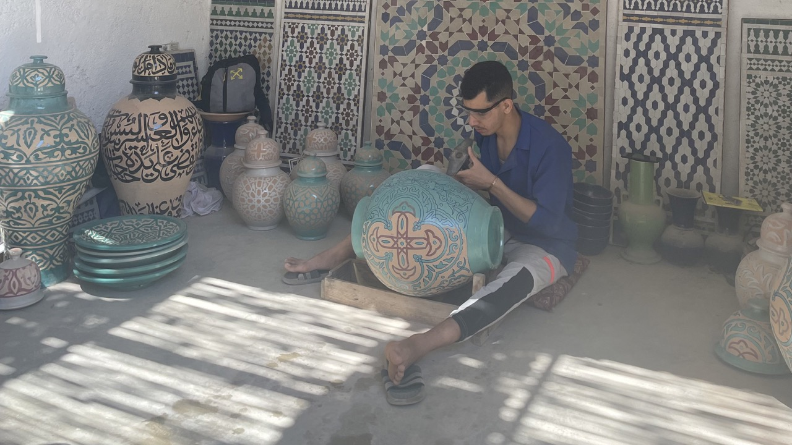
Walking tour
Why do we need another guide?
Our driver served as a guide as well and would tell us what we were driving through and stop at various spots and explain stuff to us. But there were parts of the journey where I guess there are dedicated walking tour guides that will show you that specific area. I think our driver couldn't also be the one to walk and show us these specific places because:
- You need to pass a specific test for that region (say, Fes), to be able to serve as a tour guide for that region.
- I think you need some sort of license to be able to be a tour guide for a specific region.
Thus, a tour guide for Fes is a specialist in helping tourists navigate through Fes. As such, our driver / guide dropped us off to meet our Fes guide, Islam.
Jewish architecture
He started the tour showing us some buildings on the outskirts of the Medina (their "old town"). Jews lived in this region and had a mass exodus post-WW2 through 1970s. The architecture is mostly mixed-used buildings: shops on the 1st floor and the shop owners' residence on the 2nd floor. The balcony looks outside onto the street which lets shop owners keep tabs on their store (contrast this with a Riad where the balconies look inwwards into their courtyard).
Markets, Artisans
We then went inside the Medina, which is the largest Medina in Morocco (about 540 acres). These consisted of small streets with tons of local folks selling their goods. Think Disney Hollywood Studio's Star Wars: Galaxy's Edge village, but with narrower streets and much bigger. Some examples:
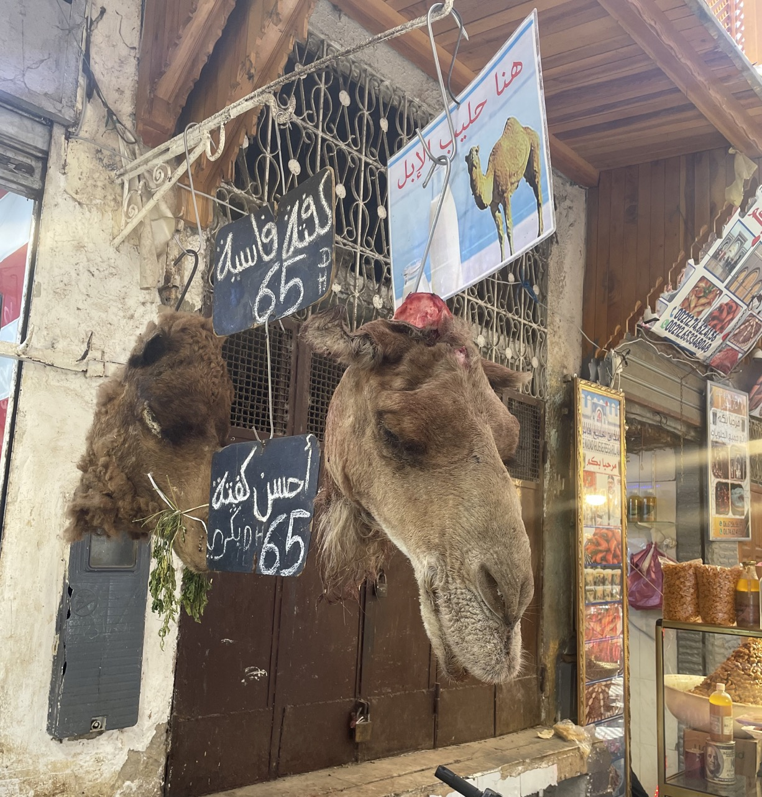
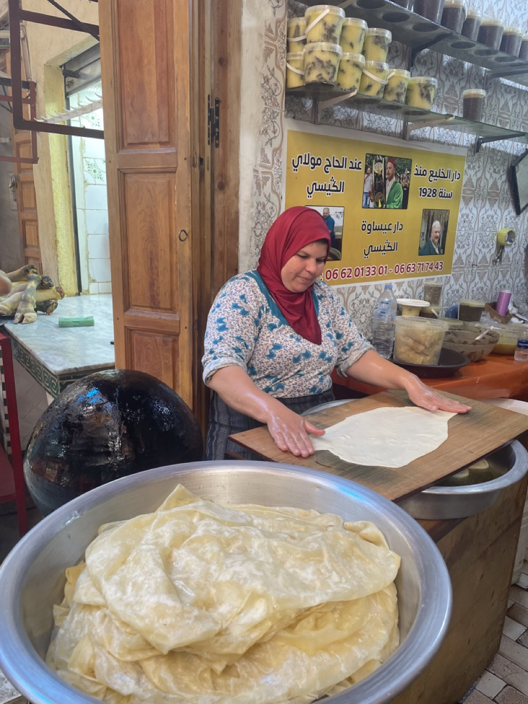
Later on, the tour guide showed us "rest stops" that used to exist--these were lodging that traveling traders would use after a long journey on their camels arriving to Morocco. Think of it as a place for 'layovers' for traders that normally need to travel with their camel for months.
We then went to a textile shop where we saw them weave everything from cotton to silk to agave, and we bought maybe $100 USD worth of stuff. Walking around, we also saw a friendly knife maker that let us play with his scissors and knives:
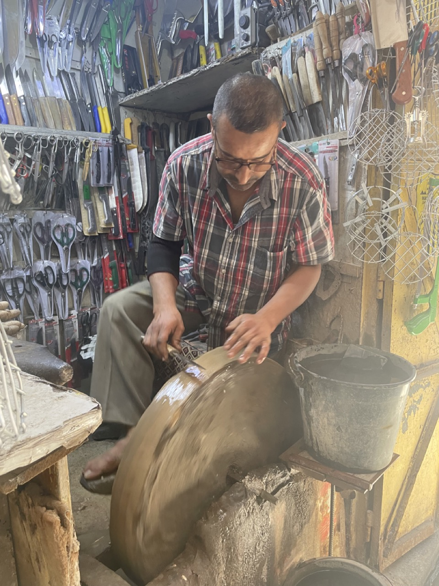
The best thing about all this is none of the shops we went through were pushy and we were told many times that there was no obligation to buy. This ironically made us 'open up' so we never felt shy about asking questions and understanding the product and their process, which if you think about it, is an indirect way of selling ourselves. If they had been more pushy I would shy away from engaging as much with the vendors, and thus would buy less.
Which is why the next place kinda sucked.
We went to a tannery and the guy gave us some mints to smell to 'mask the smell.' It's just a leather shop and it smells like leather--why do I need to mask the smell?
But we found out.
He led us up to the rooftop where he'd explain the tanning process. As we were walking up, the stench got more and more concentrated. By the time we got to look at this beautiful view:
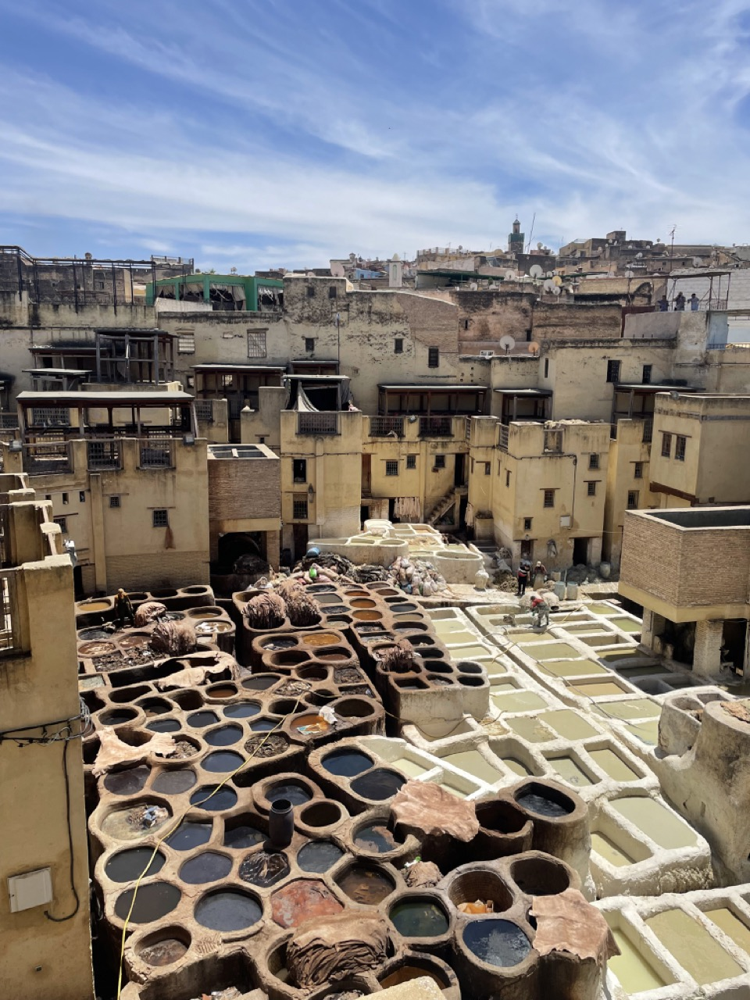
It smelled like sewage. The reason for this smell is because part of the process requires them to use pidgeon shit. And pidgeon shit does a few things:
- Softens up the hard leather
- Makes the leather more easily absorb dye
- Makes it so that the flesh and the hide is more easily separated
Spoiler alert: the mint didn't help.
Anyway, we went downstairs and the pushy sales started. He talked about how great his product is and how waterproof and fireproof is leather are. And how they use goat skin because it's the best quality. Then he talked about why his high-quality jackets are so "cheap"--it's only based on quality and not brand so it's a great deal. Then he kept on talking some more. Finally, he told us to try some jackets. This is cool and all except:
- What good is a fireproof jacket to me?
- If I were to buy an expensive leather jacket, it better be a brand name, quality be damned. The whole point of buying expensive things is to show off.
- They have really good looking leather jackets with a hood, but the hood itself isn't waterproof. So what's the point? I'll still get wet if it rains. Why wouldn't I just buy a raincoat again or use my waterproof Aigle or Moncler--or better yet, stay home?
- I'm not even in the market for a leather jacket. He didn't even ask me whether I had a need for a leather jacket and just assumed because it's good quality, the market wants it. But I don't want it. It's clunky and heavy. If he had asked me, he could have redirected our limited time together to sell me on what I really want, which are weekenders / leather travel bags.
Further, when I asked how much the jackets were he wouldn't tell me until the end. Why? If you only tell me as we're about to leave the store, there's no room for negotiation. It turns out it was $520 for a leather jacket and $350+ for a leather duffle. Cheap, my ass.
As we were leaving the store he kept asking us what our best price was. We said maybe $200 for the jacket but he kept saying that's insulting--but we told him multiple times that we don't want to buy it already, so not sure why he was insulted. Not entertained anymore, I just threw this out:
Hey listen, we're not buying it because we just don't need it. And we're not going to buy something we don't need.
This shut him up nice because he doesn't know how to handle that objection.
I get that tanneries are expensive to run and they want business, but selling like this is amateur hour and one of the things I hate most is witnessing incompetence.
Oldest university in the world
Then we went to the oldest university in the world. The school used to be a regular University that allowed for studies in various degrees and disciplines in the past. It's been since converted to a school dedicated to studying Islamic studies.
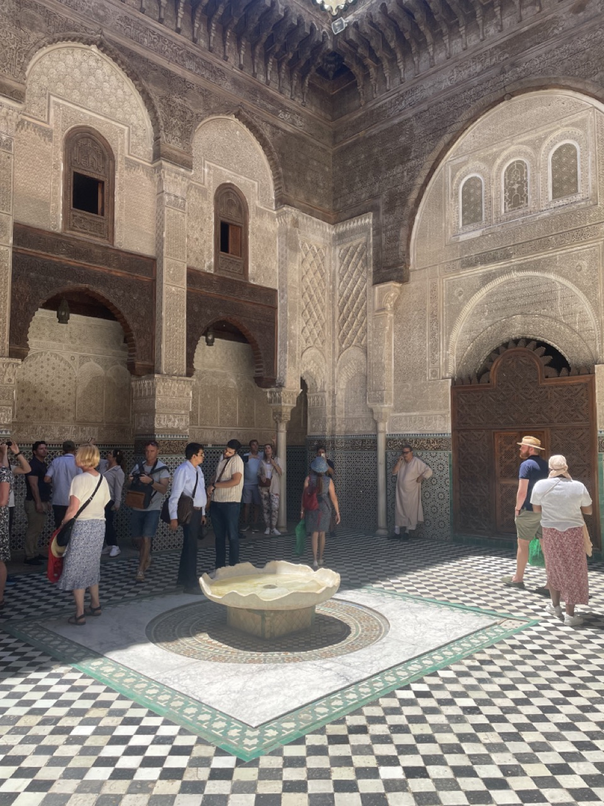
Rest of day
We went back to our hotel and walked around. There were many markets nearby and we found a Chinese place that sold camel dumplings. It was delicious--tasted like a cross between beef and chicken, maybe. It was one of the best meals there so far because it was one of our first meals there that didn't involve a Tagine or dry meat.
Went back to the Riad and left the next day.
Lessons
- Good people make adverse conditions more tolerable.
- "No obligation to buy" is the best sales phrase, because it makes me want to buy even more. It builds goodwill for some reason, even if vendors don't mean it.
- Conversely, pushy sales and bullying tactics lowers conversion--especially for high-ticket products. The best sales seek to understand what the customer wants first, then sell them the thing that they kind of already want. Selling ice to someone dying of thirst in a desert is much easier selling it to an eskimo. BTW "I can sell ice to an eskimo" is the most stupid brag because it indicates poor strategy.
Desert Camp (May 17-19)
Next day, we drove a long time (from about 8AM to 5PM, with rests in between) to what my iPhone says is Et-Taous, Morocco. We hopped on camel to get to Erg Chebbi, where our hotel would be. Google Maps says Et-Taous -> Erg Chebbi is about 24km and camels aren't that fast. Thus, my best-guess of our camel route was probably something like this instead:
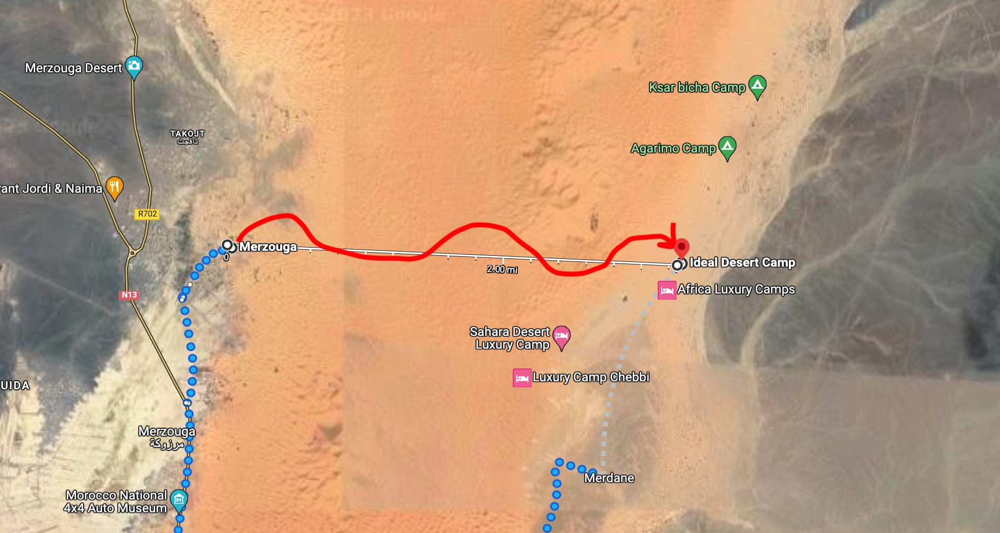
We hopped on some camels and started making our way over to our hotel, the Ideal Desert Camp. The mounting/dismounting process was very natural--if you've ever played any video games like Skyrim or anything where you need to mount/dismount animals, it's almost exactly what you'd expect.
We rode for about 2 hours, and the surroundings were surreal:
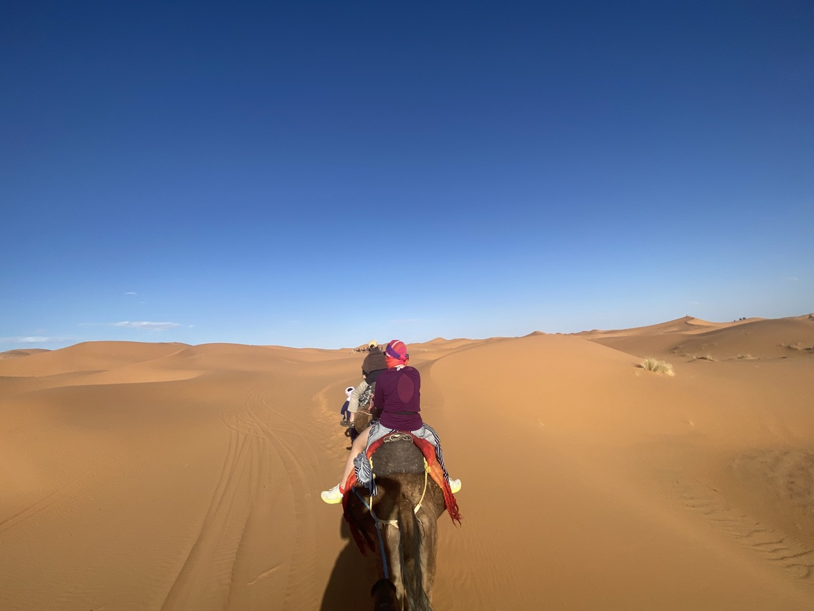
We then settled down at a sand dune at around 7PM to watch the sunset. By this time, my ass was hurting. Not just due to the soreness of my ass muscles from maintaining balance for 2 hours, it was that I'd been chafing my ass as the camel rocked back and forth. But eh, all in all, a pretty minor ass scrape. On the sand dune, while waiting for the sunset, the guides brought out some snowboards if you wanted to sandboard.
It was a cool experience but I only rode it once since my mouth was full of sand by the time I hit the bottom of the slope. Also, walking back up sucks because while it's a great thigh workout, breathing hard while there's a ton of sand in your mouth is not fun.
After we watched the sunset, we kept riding the camels to get into the hotel. By the time we got there, it was about 9:15PM where we were served some tasty Moroccan tea. So the whole 'camel journey' lasted about 4 hours, 15 minutes. We were told that dinner was at 9:40PM so we went back to our hotel and rinsed the sand out of our mouths and ate dinner. It is a tent in the middle of the desert, but they miraculously had hot-running water, shower, a sink, and a toilet inside our tent.
We ate dinner and it was kind of the same as what we've been eating:
- Tagine with eggplants, cheese, and tomato
- Grilled meats with rice and veggies
- Fruits as dessert
This was a good meal since the grilled meats weren't dry and the tagine with cheese is actually pretty good.
One minor issue is that they don't have enough electricity so all the chargers in the tent are USB chargers. Thus, there's no hair dryer or anything to charge your computer with. Good thing we bought a portable charger beforehand, which can work to charge laptops (but still nothing to dry hair with--I don't mind but sucky for Serena).
The next day we were picked up by our driver around 10AM and went to visit the nomad people. These folks live near the Sahara and close to towns and basically their lives consists of:
- Taking care of their fleet of ~60 goats
- Eating their goats for survival
- Going to town and selling / trading their goats or other goods for other materials
- Building sturdy tents and clay buildings to survive the harsh desert envrionment
They gave us "Berber pizza" which is basically like a fresh-grilled naan sandwich with tomatoey stuff sandwiched in between. They also gave us Moroccan tea so we can sit and chill with our driver / guide. Had a lengthy discussion with our guide about the nomad folks and how his family used to also be nomads. We concluded that despite the harsh conditions that they need to live in, the kids looked genuinely happy and that life was simpler. Maybe satisfaction in life doesn't have to come in massive wealth or brand names or other material things.
After that, we went to play with ATVs! We rode to a local peak and the view was amazing. We took a bunch of pictures, but I won't show them here because they don't really capture how high up we climbed with the ATVs--but here's a video of me sucking at ATVs:
We were still in the same desert area but instead of going back to the tents for that night the tour guide had arranged a hotel for us to stay at. This is because it can get very hot and the weather can get very bad, very quickly, so staying for 1 night only in the tent minimizes our exposure. And I'm glad we switched because as soon as we got to our hotel, there was a major sandstorm. We can hear the wind whipping through the outside and when I peaked outside our room to the courtyard, a ton of sand was swept in by the storm--the air was literally a brown fog, indoors.
Their pool, which looked beautiful when we first walked in (see picture here), which normally has white and blue tiles, turned yellow and brown after the sandstorm.
{kind=link}
We just hid in our hotel and ate dinner and went to sleep. The WiFi was mid, so I couldn't get much work done. The next day, we ate breakfast at the hotel (which was delicious, but very similar dishes to the desert camp) and left.
Lesson
- Money is a great resource to have, but geniune happiness is found elsewhere.
Ouzazarte (May 19-20)
Africa has a lot of natural resources and a lot of places are untouched, so one of our first stops for the day was to see fossiles here. Their fossiles are allegedly 300-500 million years old. I say allegedly because they have a commercial intent so it's hard for me to say for 100% if it's all just bullshit. But assuming it isn't bullshit, it's quite amazing.
Most countries, if they have a bunch of super old fossiles laying around, would put it in a museum and protect it. Here? Nope! Just chop up the fossile-containing rocks, polish it into items and monetize the hell out of their national treasure. It's all about the money here.
Naturally, we bought $80 worth of fossilized kitchen items.
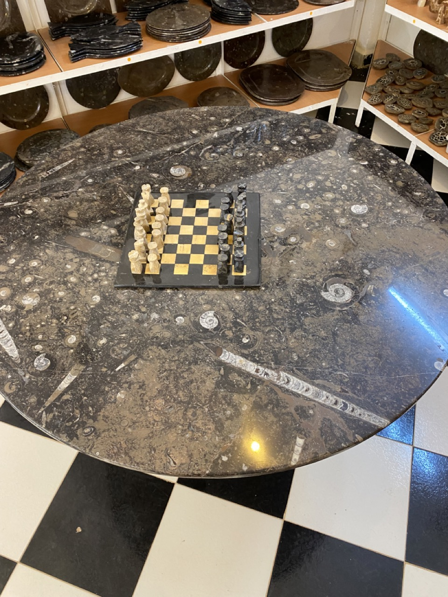
Then, we stopped by a place where we learned how the nomad folks did their irrigation. They dug canals by hand, and these were accessible through wells that they also dug.
After that stop, we saw some goats and kept driving until we reached Ouzazarte AKA the "Hollywood of Africa."
They call it Hollywood of Africa because tons of movies were filmed there. Some names that come to mind:
- Gladiator
- Game of Thrones
- Lawrence of Arabia
- Indiana Jones
- Prince of Persia
We stayed the night in Ouzazarte--the hotel was beautiful and French-themed. They had a big, green garden and we had a balcony looking at the garden. We saw some local folks with donkeys transporting vegetables. The food there sucked though. Our tour guide and some tooth pain and asked us if we had medicine for teeth (he was staying at the same hotel)--so I gave him some extra strength Tylenol. What's good for him is good for us because as passengers, we don't want an in-pain and sleep-deprived driver.
The next day, we went to a Unesco Heritage site nearby (Ait Benhaddou) and they were building a set for Gladiator 2 there. They're going to build it for 6 months and apparently will only film it there for 3 days. Cheap labor, I guess.
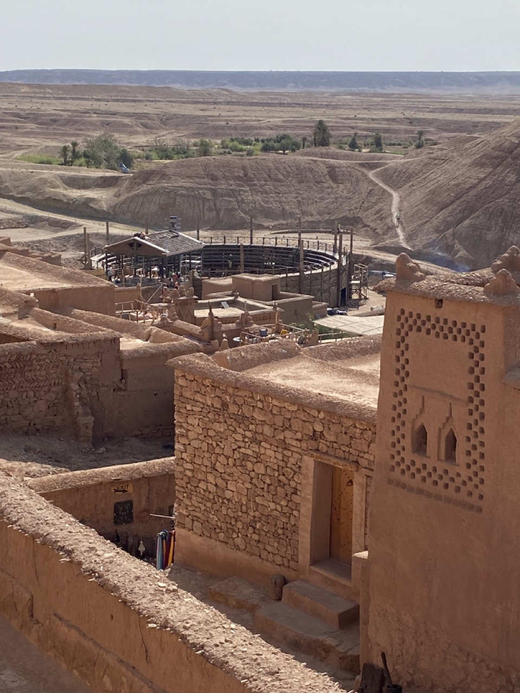
Then, we went up to the top to take in some views and left to see how Moroccans make argan oil. For:
- Food--they'll roast the argan nuts first, and then put it in a grinder and grind it by hand (or by machine), and a brown slush comes out. This brown slush can be used as is or mixed with other things like hazelnuts or honey to make jams.
- Cosmetics--They'll grind it without roasting it and the oil is much lighter in color. Then they mix in chemicals to make soaps, creams, and more.
It was very expensive so we didn't wanna buy anything. Except we did, and spent about $100 on 500mL of pure argan oil, creams, and jams.
We then ate my favorite meal of the whole trip. I wish I had the name of the place to recommend you, but according to my camera roll's geolocation, it's in Zerkten somewhere. It's a local place where you (by which I mean our guide) tells a butcher what meats / how much we want, and he'll cut it up. I think we had:
- 1kg of lamb
- 0.5kg minced lamb
- 0.5kg of kidneys, livers
- 1.5L water
- Large pot of Moroccan tea
Or about 4.4lbs of food.
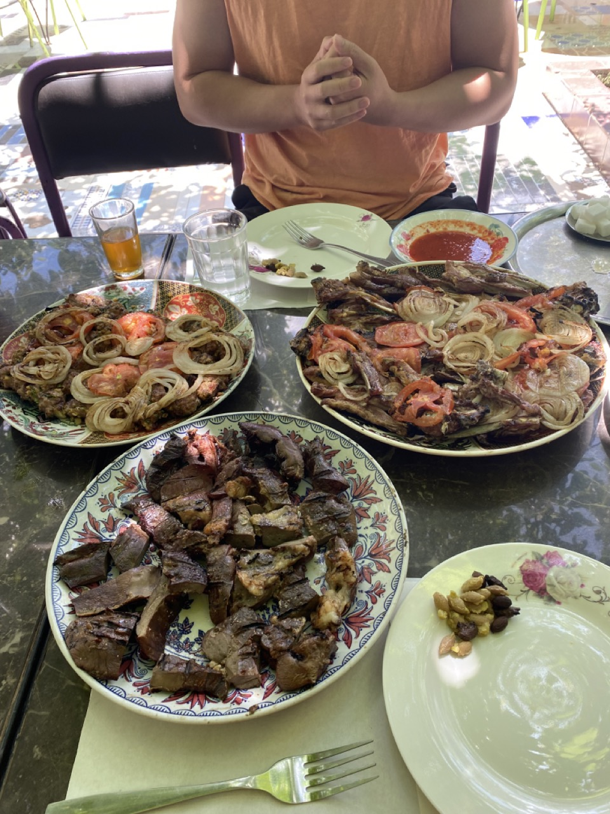
The meat was juicy and good and the grilled tomatos/onions were really, really good. Sweet, moist, and the tartness of the tomatoes cut through the heavier flavor of the lamb and kidneys.
Guess how much it cost?
No seriously, guess.
It only cost 300 DH (or $30 USD). And they gave us 2 packs of gum for free on the way out. It was so cheap that even our guide said that it was a great deal, even for local people.
Belly full of protein farts, we then drove to Marrakesh, our final destination for the trip.
Marrakesh (May 20-23)
Overview
This is a big city and is very similar to Fes. Large markets, and the city is separated into 2 regions: new town and old town (their medina / historical center). The new town is mall modern, with malls and such--old town is similar to the Fes markets' vibe as you saw above.
First Dinner
Our driver said he'd go to the dentist today, so instead of asking him to drive us to the old town, we instead just called a taxi. This turned out to be a bad idea. Trained in our previous trip to Mexico, we also negotiate and settle on a price before boarding the taxi. There are 2 apps in Morocco for ridesharing:
- Heetch
- Roby
We tried Heetch first because it had a lot more reviews on the app store. From our hotel to the old town, it's about 40 DH (4 USD). But there's no taxis on the app. We asked the hotel staff to help us call a taxi and they reluctantly did so after asking them a few times. They mostly spoke French and only some English, so maybe they didn't understand our request? Nope--we later found out that it was because the receptionist thought it wasn't her job to call a taxi.
Anyway, they called a taxi and the taxi quoted us 80DH (8 USD) to the old town, or double the price of the app. We negotiated down it down to 60DH, but that's still a 50% markup. So we told him to fuck off. We asked the hotel to call a taxi with a meter, as a meter would show only 30-40 DH going to the old town; they obliged. The 2nd taxi came and said he isn't willing to go to the old town because a car can't get there (this is a lie because we were able to get there easily by car as you'll find out).
Getting pissed, I did a last did effort and tried Roby. Roby quoted 67DH to the city, and I said "fuck it" and called a taxi. It came and he spoke English and was a great driver. Asked us where we're from and we said "New York" and he said he'd love to go to USA one day, inshallah (if Allah wills it). Acted as a tour guide and talked about the old town vs new town and pointed out buildings on the way to the restaurant. He dropped us off at the restaurant and gave him 100 DH cash (the app doesn't have a credit card option and so you must pay cash). He only had 20 DH in change and was going to go get more for us, so we just say "forget it" and let him keep the change.
We don't mind being ripped off if the service and the person is good (consider it a 10DH tip). But if they're a grumpy driver and their service sucks, I'm hesitant to even pay 60DH because it doesn't feel as good to spend that money.
Anyway, we had dinner at this place called Italian place Limoni due to its high rating but it sucked. The ravioli was very doughy and the pasta, while creamy, had no flavor. It is a direct insult to Italian cuisine and my pretend-heritage. The interior design and courtyard was nice though.
Coming back, we ran into a taxi that agreed to take us home for 80DH, and we negotiated it back to 70DH. The car was dilapidated and the rubber lining on the doors were completely falling apart. The car smelled and the driver smelled of sheer incompetence. Whereas the previous taxi driver didn't even need a phone/GPS to navigate us to the restaurant, this driver needed us to punch in the address for him for the hotel on his phone. Not only that, he kept putting his phone on a wobbly-ass phone holder. It looked like the phone was about to fall out of his dashboard any second, and he kept having to adjust it every minute or so.
Just sheer-fucking-incompetence which I really hate, and pisses me off now thinking about it.
The whole time he spoke French and asked in French if I spoke French, to which I responded:
No, English
To which of course he kept speaking French to me, which I ignored.
By the time we got to almost our destination he stopped his car because he's too lazy to make a U-turn to get to the hotel. It wasn't a small street crossing to get to the hotel; if we got off the car there we need to navigate a very large roundabout to be able to get to the hotel. I'm sure he didn't understand English but Serena and I were very loud in our demands for him to actually take us to our destination and he angrily obliged, while speaking some French, still assuming I'd magically pick up the language because he kept speaking it.
Still no clue what he's on about, he dropped us off at the hotel.
YSL
The next day we had breakfast and the breakfast sucked. The pastry was kind of stale and the food was meh. There's an omelette lady that cooks omelettes but it took forever to get her to do her job--she was too busy chatting it up with other employees and laughing. When she finally cooked, the omelette was pretty burned. I didn't include pictures here of breakfast because I don't want to hurt your eyes.
After, we made our way to the YSL house, and our driver said us how our hotel was. Serena said "it's OK" and our driver got very concerned.
We explained the taxi situation and he told us we should never interact with local taxis and we got lucky that we were only charged 70DH-80DH. He said he's had some tourists that didn't negotiate the price before jumping in the car and were charged 550 DH (55 USD) for a 10 minute trip. For reference, we thought 6-8 USD was expensive for Morocco standards for a 20 minute trip. He also said that even the local people in Marrakesh hate the taxi drivers and see them mostly as scammers.
We got to the YSL house and took a lot of pictures like these:
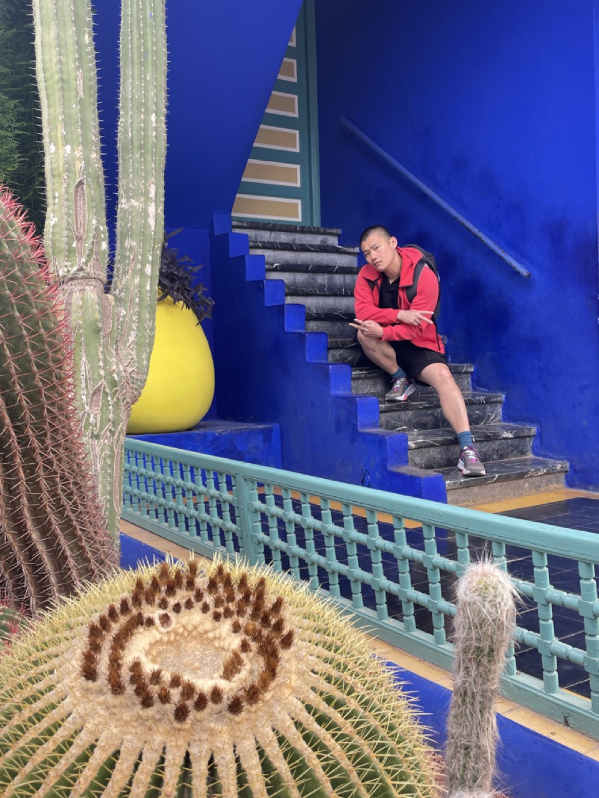
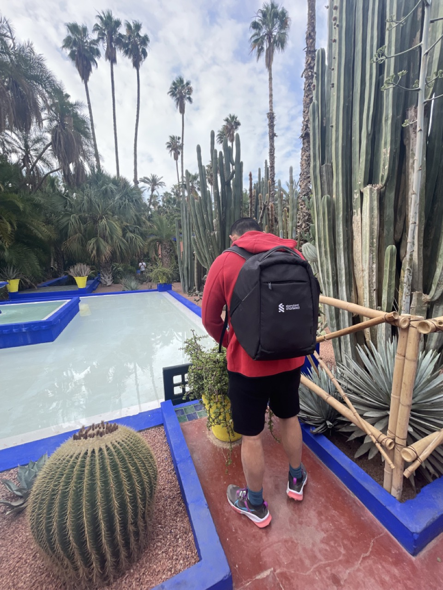
The guards there were annoying; they know people were there to take pictures but would regularly chat with other security guards while standing in high traffic areas. Maybe it's to rush the tourists so they will leave the premises quicker? Easier to put up signs in that case.
Anyway, after being a pro bono model for an hour (I'm joking, because we had to pay to visit the YSL house), we headed toward the the Marrakesh medina where we'd have another walking tour.
Walking tour: Marrakesh
Riads
First, he took us to an older Riad which now acts as a museum, which had striking resemblance to the Riad Sara we stayed at in Fes. It had in common:
- Beautiful courtyards
- Rooms had very high ceilings for the people who used to stay there
- Even the room for the servants had ceilings much higher than what we're accustomed to in the US
- Fountain in the middle signifying the fountain of life
- 4 quadrants to signify rivers of milk, honey, wine, water
- Lots of symmetry and geometrical shapes for their mosaics
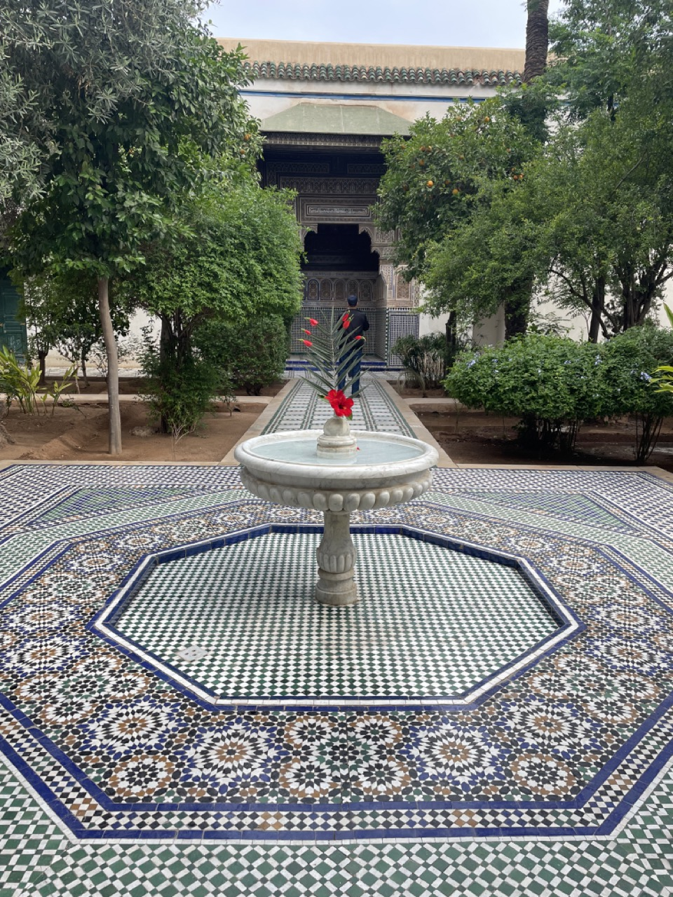
It was huge though and unlike modern Riads, this one had many courtyards and 60+ rooms.
The markets
Then, he took us to a market. As you'll see below, the market is very similar to Fes'. We saw some leather shops and various artisans, but my favorite are what our guide calls "coffeezillas." No, not the Youtuber. These are folks that sell coffee and has a very large pot of coffee that's continuously heated by coal. And you just pay them whatever and they'll give you a nice, delicious cup of coffee.
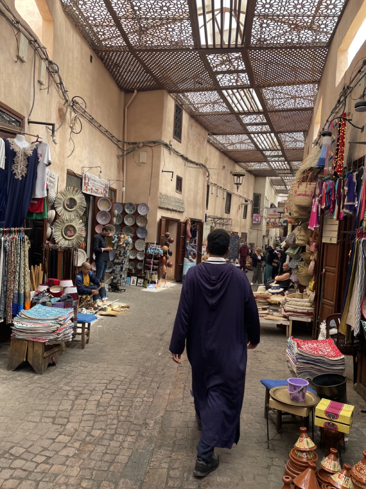
Paid him 10 DH ($1 USD); I think going price is actually 5 DH though--whatever, he poured it twice so he should get twice the money.
Marrakesh square
Finally, we went to the main Marrakesh square. If you've seen Youtube videos on Marrakesh square, you'll know that many people will try to scam you or try and sell you stuff. Apparently, when you're walking with a guide, it happens a lot less. Even at the market, someone approached me while our guide was helping some lost tourists, and our guide immediately came and padded the soliciter on the shoulder and said something and the solicitor went away.
So I highly recommend using guides when traversing places like these if you don't wanna be annoyed.
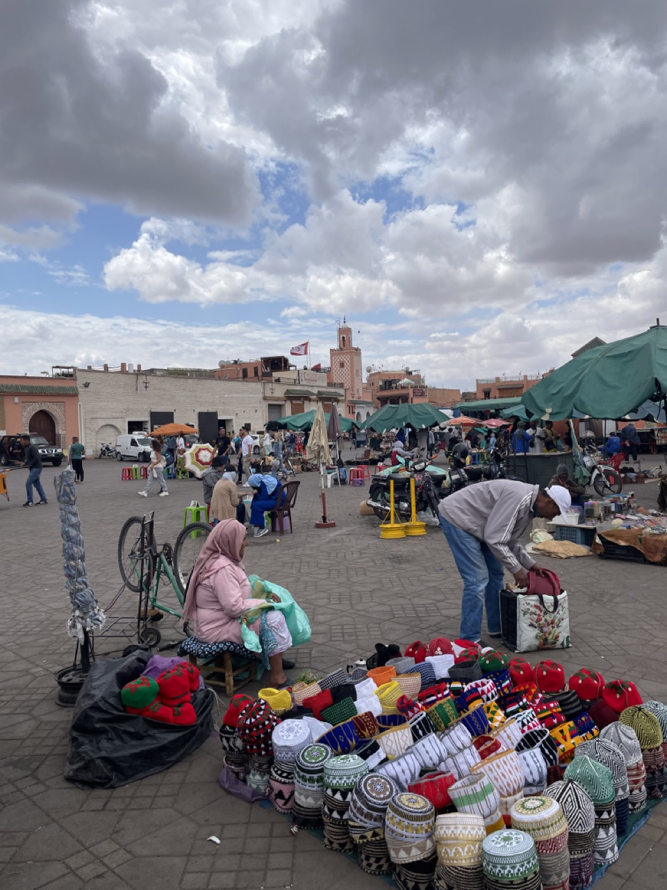
Sigma lunch
He then took us to lunch where we had a view of the square from the rooftop. Serena thought it was mid but I thought it was extremely delicious because it was one of the very few meals we had where the tangia's meat is very moist and wasn't dry at all. The lamb was also melt-in-your-mouth soft. Just looking at these pictures for this post makes me hungry and as I type this, I feel my mouth salivating. That's how good it was. The food isn't visually stunning as you'll see below, but goddamn, just trust me on this one.
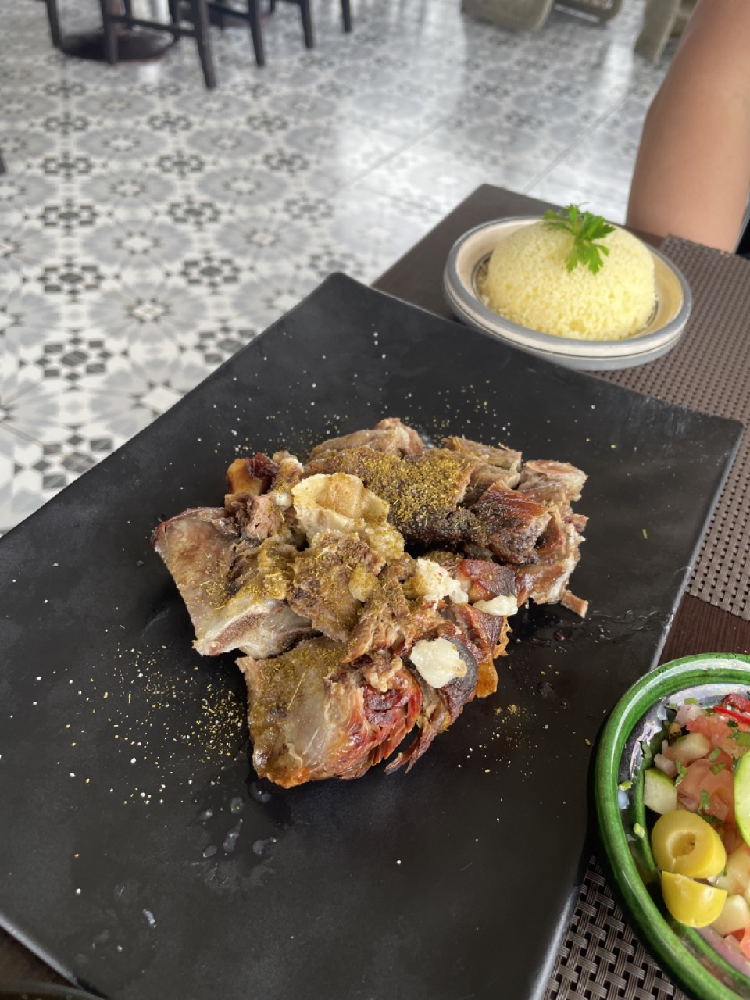
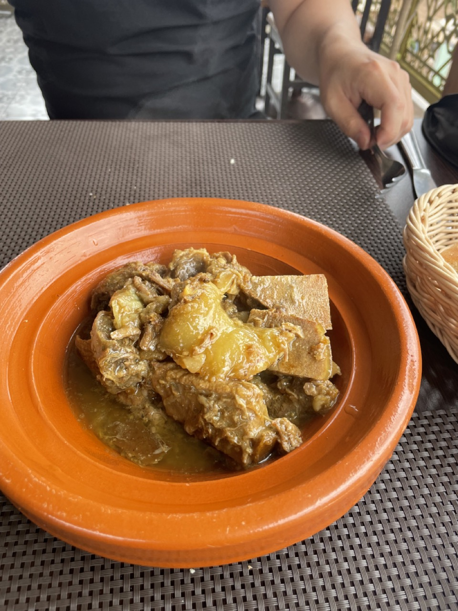
The best part--our guide waited for us to finish lunch so he can walk us back to our driver! That's above and beyond and immense service, so we tipped him.
Powerless
No, literally.
We went back to the hotel and our room had no power or water. So went to the reception and asked them about it. They said the city is doing something and it's not their fault. This is shitty because taking a shit is more awkward than usual now.
Another problem: it was 2PM and we booked a Hammam at the hotel at 3:30PM. They said it'd only take an hour to fix, so we had our fingers crossed we can do a Hammam by then. Serena texted the boss of the Moroccan Daily Tours about the situation, just as an FYI, and 5 minutes later our driver came back.
I want to highlight the ridiculously immaculuate service that this tour guide had for us here. They didn't need to do anything of the following, and everything below is above and beyond:
- Driver came back and took care of us
- Found out more information from hotel staff and tried to understand why we thought the hotel was just "OK."
- It's important to note here that the hotel and its facilities is one of the nicest on the trip, and this was no accident. They saved the most expensive for last for us because they wanted us to end the trip with a great experience. Alas, the hotel staff kind of kills the magic a little bit.
- Knowing that our Hammam booking's at risk, he spent half an hour calling local Hammams, begging them to take us as customers (normally these spa treatments are booked 24h+ in advance because they're in very high demand). And he secured a booking.
- And they insisted on paying for our Hammam for some reason, even though it wasn't their fault.
- If, by the time we come back from the Hammam, the hotel still had no electricity or plumbing, they offered to help us book a local Riad instead for the remaining nights.
We had time to kill before our 3:30PM Hammam, so I played foosball with myself before a staff member came to join me.
Foosball
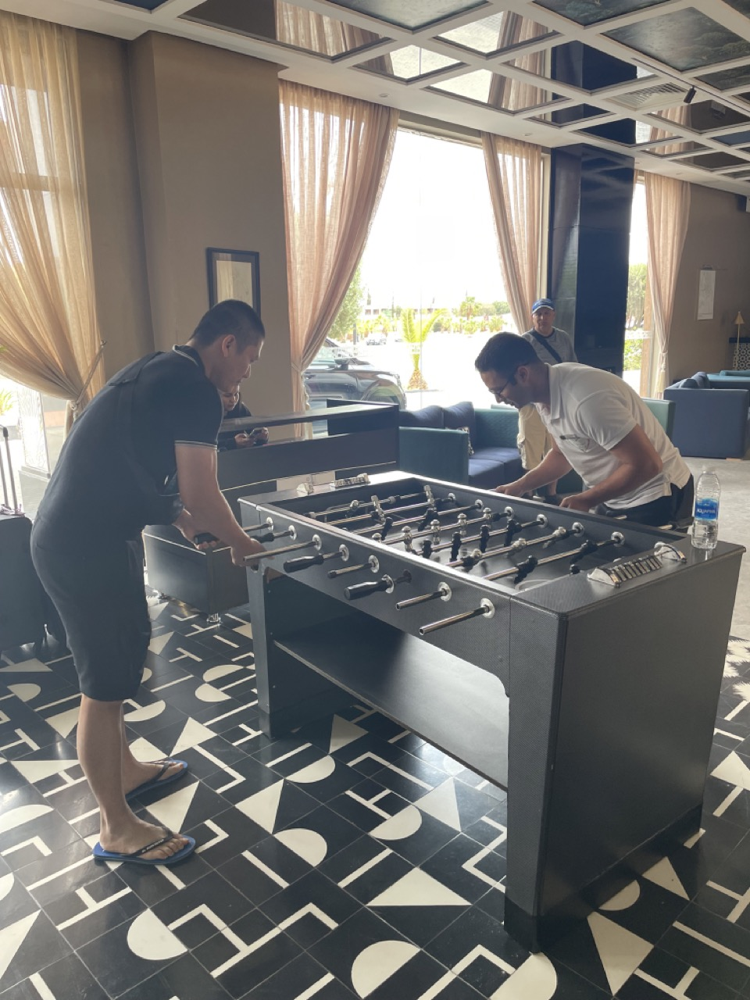
Then, I played our driver whom I'm pretty sure let me win. The staff played with the rule in foos where the center 5-man can score even when the ball just got in play. Our driver played with the rules where the center 5-man scoring at any point in the game doesn't count at all, ever.
For me, the rule I'm used to is: the 5-man cannot score when the ball is first in play, but can score if the ball has gone outside of the center once during this round (i.e. you pass your ball to your offensive 3-man and then back to the 5-man, and then score = counts as 1 point, but if you score with your 5-man when you toss your ball in = no points).
Of the 2 extremes from the staff and driver, I prefer the latter extreme because the 5-man scoring at the beginning of the game is kind of bullshit. And the staff scored like 6 points like that in both of the rounds.
Hammam
Anyway, we went to the Hammam and our tour guide insisted on paying. The whole hotel fiasco isn't really their fault at all so we didn't feel good about taking their money so offered to pay ourselves. He kept insisting so as a compromise, we offered to pay $100 of the $130 Hammam. They feel good about helping us out in this situation, and we feel good about not having them pay much for something that isn't their fault at all.
Anyway, we did the Hammam where the service was OK? They kept speaking French to me though so I had no idea what they were saying. They didn't really provide me with those massage underwear so I thought I'd just go into the Hammam nude. Being very conservative (in a predominantly Muslim country), the workers saw I was nude and asked the other staff to bring us underwear. Anyway, despite the faux pas they gave us Moroccan snacks in the waiting room + Moroccan tea, and again once the bath was finished. When we were done resting after the bath, they took us in and massaged us for about 45 minutes, so the whole experience was about 1 hour 30 minutes.
The bottom line here is I got to ate snacks and my skin is a lot smoother.
Our driver then picked us up and we all had dinner together. This would be our last meal together because we'd be getting a new driver tomorrow due to schedule conflicts. We asked for local food and OMG the food was so damn good. We had:
- Moroccan tea
- Freshly made, oven-fired bread--kind of like naan
- Tagine (1kg of lamb)
- 1.5L of water.
Whole thing was just 200 DH + 20 DH for tips and was very reasonable. We got back to the hotel and there was indeed water and electricity. So we said our goodbyes to our driver and tipped him generously.
Walking tour: Essaouira
The port
This is the final real day (May 22nd) of our trip. The next day would just be a travel day to the airport. This is a seaside town that's 3 hours away from Marrakesh, and apparently John Wick was filmed there. On our plane trip back to the states, I watched John Wick 3 again and noticed that these scenes were filmed there:
- Some drone shots of Morocco
- The scene where that dude shot Halle Berry's dog
- Various scenes where John was walking towards the Moroccan continental
- The transition scene where John has arrived to port to go to the Moroccan continental
And probably more I missed.
Anyway, we got to the town and was greeted by another guide to do the walking tour. We walked around and learned that this was a place that was dominated by the Portuguese back in the day. But eventually they lost their power due to various skirmishes and abandoned the port. As a result, there's a bunch of cannons that's left behind in the port city.
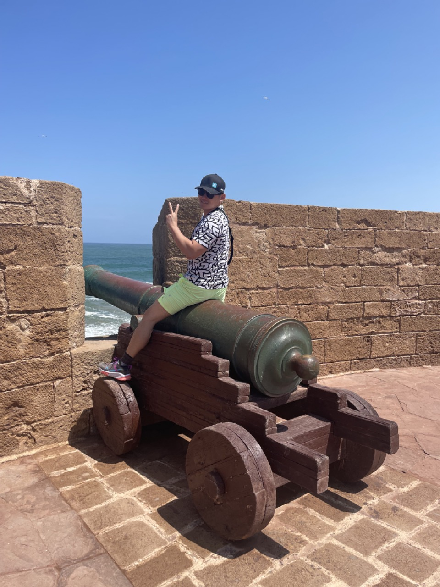
Architecture
We also learned that the city had a mixture of Jewish, Christian, and Muslim folks. And when they established the city, their hope is that all 3 religions, while having different believes, will come together as one and accept each other. As a result, a lot of their architecture is based around a unification of all 3 religions. For example, houses would generally have 2 emblems:
- 1 emblem that denoted which religion they believed in. Kind of like Harry Potter's emblems for the 4 different houses.
- Another emblem denoting peace among all 3 religions.
Got wood?
We then walked around the town some more, navigating the maze that is their town--very similar to the old town / markets of Fes and Marrakesh. They took us to a woodworking shop and again, there was "no obligation to buy" which made me want to buy a lot more. You can see in the videos below a ton of this stuff is made by hand.
Alas, a big wooden bowl for food was like 800DH and we can't really justify that purchase. They also didn't have cutting boards though, which I would've liked to have buy. Still, if they had the right product, I'd much more gladly buy this than leather goods because the dude showed us his craft without asking for anything in return.
Bad lunch
Afterwards, the guide brought us to a seafood lunch place (a lot of tour guides bring people here so they probably get a kickback). The seafood was mediocore, but we had to wait a long time for it. The shrimp tartare was made with cooked shrimp, which left me very confused. Their shrimp tagine was made with poorly quality, frozen shrimp and was gross. Their seabass was OK / a little dry. Their calamari was OK, but not enough flavor for my liking.
Not only did we have to wait a long time for the food but it was the most overpriced / expensive meal we had at 510 DH ($51 USD).
This guide didn't wait for us to finish lunch and just told us to find our way back to our guide. Wish we tipped him less than we did.
Final Dinner (really good)
For our final dinner, we told our driver to just take us to the same place as yesterday. Apparently, not only can you order food from the menu, but you can also go to a butcher and ask them to cut you up some fresh meat, and then take it to the next station and they'll cook it fresh for you. They'll then serve it to your table. We had:
- 0.5 kg lamb tangia
- Bunch of skewers
- 4 lamb brains
- 4 things of liver
- Moroccan tea
- Fresh wood-fire bread
- Some really hot peppers
We insisted our driver eat with us and had a bunch of leftovers, so just asked the driver to take it to-go so him / his wife don't have to worry about the next meal.
Lessons
- Overall, the hotel was very pretty and one of the most modern/nicest we've stayed. But due to poor staff, I think overall it was one of the worst hotels in the trip. Hence, more adverse conditions with good people > good conditions with bad people.
- I'm less willing to pay for poor service than great service, given the same product. Thus, in business you can compensate for a mediocore product with excellent service for at least some part of the market. Obviously great service + great product = $$$ though.
- Brain is very delicious. It's got a fat and fluffy texture to it and goes well with sauce and spices. Chasing a bite of brain with a bite of very spicy pepper is peak Moroccan food.
Epilogue
During our last dinner with our first driver, he followed my Tik Tok and I messaged him in Arabic (he can't read English) to thank him for the wonderful trip. His reply:
هذا واجب لا شكر على واجب يا سيدي.
ChatGPT translation (Google translate didn't make a lot of sense):
This is a duty, no need to thank for a duty, sir.
He went way above and beyond because he felt responsible for us and this wasn't just some "job" where he gets paid and does the least possible, as is common among Americans. He did everything possible to make us happy because he felt it was his duty / moral obligation to do so.
Main takewaways from trip
- Adverse conditions with good people > good place with bad people / staff.
- Sales tactic: not being pushy = customers are more likely to buy. Always focus on the customer's "WIIFM" (what's in it for me)
- People with limited financial resources can be happy too. Different wealth levels just means different types of problems to solve. Happiness and wealth are almost orthogonal.
- Treating your job as your 'duty' / moral obligation makes your customers a lot happier. And probably beneficial to you, long-term. Probably much more true in businesses than in corporate settings. But still.
- Great service helps compensate for a slightly worse product than competitors'.
- Morocco is a great and affordable trip and I highly recommend you go. Especially with this tour group.
- I hope I can make more money to go on more trips like this.